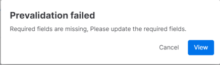
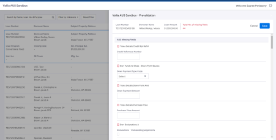

View Button
- User can see the previous submissions by clicking on view button from the pipeline
- View button will be enabled under certain conditions in pipeline
- Loan should be Active Loan folder or in Prospect
- Milestones within specified list <Approval, Doc Request, Docs Out,Docs Signing,PTF,Funding,Shipped,Purchased,Servicing, Reconciled and Completion
Prevalidation
- This is the process to ensure that all the mandatory fields is completed for the loans before run the Dual AUS (first run)
- Click on the First run button from the pipeline page. If the pre-validation failed, the popup will displayed

- Click view button to view the prevalidation slider,
- Slider is displayed with Missing fields and the below details will be displayed
- Total number of missing fields, borrower name, loan number loan amount
- Once Updated all the mandatory fields and click Save from the pipeline. The page will redirect to the submit scenario tab
- It will complete the initial run but that first submission will not be listed in the previous submission tab
- First run button will change to Run button in the pipeline and the user will redirect to submit scenario with the success toaster for first run 